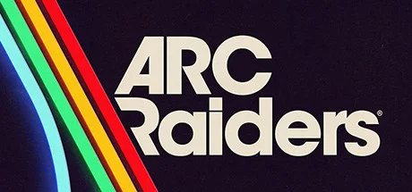

Embark Studios 开发的第三人称撤离冒险射击。近未来地球被神秘机器ARC摧残，玩家从地下避难所Speranza出击搜刮地表，与机器和其他奇袭者周旋。
想象一颗被叫做 ARC 的机器军团清扫过的地球。城市的钢筋骨架还立着，飞机停在跑道上锈成一片橘红，水坝裂了一道缝但没倒，雪山顶上的矿井还在缓慢渗水。人类没灭绝——只是缩进了地下避难所「Speranza」苟活。这不是辐射尘飘满天的核灾，也不是僵尸啃咬的瘟疫——这是一场「机器赢了、人类躲了」的安静末日。瑞典 Embark Studios 用THE FINALS 同款物理破坏引擎把废墟做活：每一面墙都能被打穿，每一根柱子塌下来你都能听见混凝土碎裂的回声。
你扮演的是Raider 奇袭者——避难所派去地表搜刮物资的那批人。出门时你只有三种选择：和两个陌生人组队、和好友约一支三人小队、或者一个人独狼。每次出击身上能背的不多——背包里二十格、口袋三件、武器两把。死了就什么都没了。地表上还有别的玩家、还有无人机和巨型 ARC 巨兽，活着撤回来你才能把这趟收获兑换成下次出门的筹码。这不是「英雄拯救世界」的故事，是「普通人想多活一周」的故事——而你已经为今晚这趟冒险准备了三天。
那个上一局帮你撤离的队友，今晚可能就在 Buried City 的转角等你；你刚搜到的那张稀有改装蓝图，会因为你死在撤离电梯门口三米外彻底归零；头顶那只巨型 ARC 巨兽，是阻止你撤离的死神，也可能是逼对面玩家暴露位置的天降救星。这不是一个关于「打败机器」的故事——ARC 你打不完，避难所也救不了人类——这只是一个关于「下一次撤离你能不能回来」的故事。今晚你要去哪张图？带几个人？带哪把枪？如果只算一个问题——你还敢出门吗？
末日机器废土 × 撤离心跳，是把《机器战警》《终结者》《尼尔机械纪元》那种「人类已经输给机器」的视觉哀感，和逃离塔科夫式的撤离博弈装在一台引擎里。底色是哑沉的钢灰 + 锈蚀橘红——废墟主导的暗哑色彩里，只有 ARC 机器的蓝白指示灯和撤离电梯的红色警示光是高饱和的色彩刺客。Embark 把THE FINALS 的物理破坏叠到了写实材质里，让每一面被打穿的墙都成为视觉记忆点。
「机器废土」美学的发展跨越了 40 多年。1984 年《终结者》定型了「钢铁机器猎杀人类」的银幕母题——红色目镜、骨架结构、金属反光至今是 AI 反派的视觉模板。1999 年《黑客帝国》把「机器统治世界、人类躲在地底」的设定推到大众文化主流。2010 年《地铁 2033》用游戏的方式表达了「地下避难所 × 地表危险」的双层空间。2017 年《尼尔：机械纪元》把「机器废土 + 哀感美学」做成了独立美学流派；同年《逃离塔科夫》把撤离循环作为新玩法立稳。2023 年《THE FINALS》（Embark 自家）把物理破坏做成视觉奇观。ARC Raiders 是这条线的合流：机器废土视觉 × 撤离循环 × 物理破坏，一次打包成自己的美学签名。
基于体验清单 · 审美偏好 · IP故事三维度综合选出
点击链接跳转到对应平台查看 · 仅整理外部链接